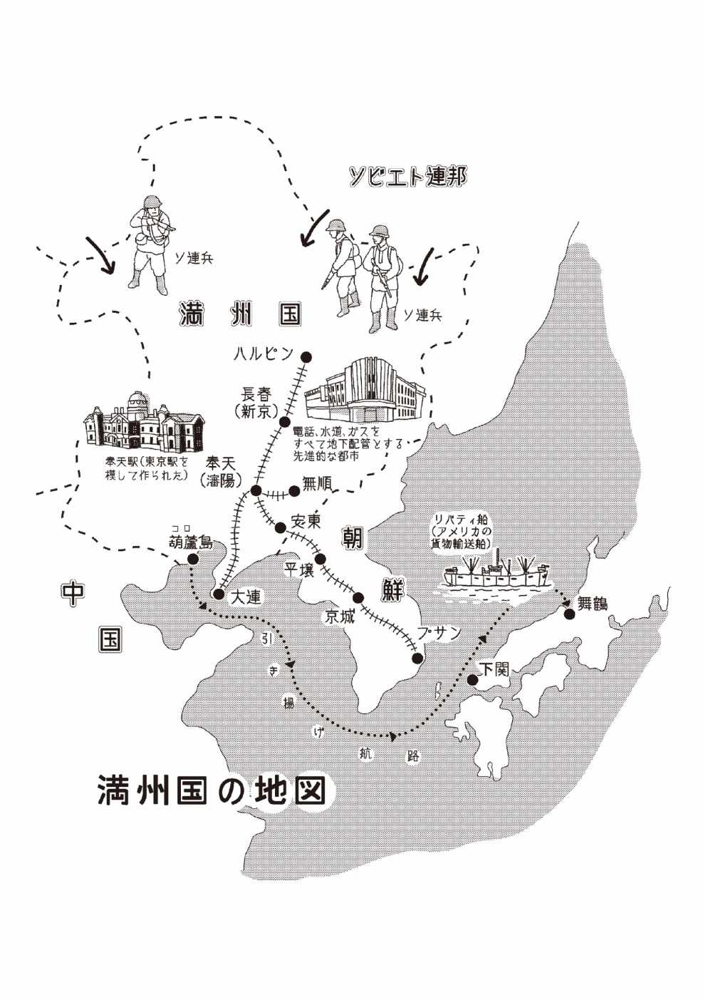

| 軍は在満の一般邦人を見捨てた | |
| 堀江 泰子 | |
| (2015) | |

はじめに
かつて、中国の東北地方に満州 というところがあったことが今、忘れられつつあるように思います。日本が第二次世界大戦に負けるまで、満州には沢山 の日本人が住んでいました。私は大正 九年にそこで生まれ、満州 事変 を経験 し、苦難 の末、日本に引 き揚 げてきました。
先の戦争の悲惨 さは語 り尽 されていると思われるかもしれませんが、満州については十分とは言えません。当時、大人だった人たちはほとんど亡 くなっていて、残っている人は当時子供で、何も知らない人が多いのではないでしょうか。戦争中は「軍に協力せよ」と私たちに迫 った軍関係の人たちは、日本が負けると分かると、いち早く一般の市民を置き去りにしてさっさと逃げ出しました。その中には、一流 の会社でいい地位についた人や、沢山 の年金をもらっている人もいると聞きます。
しかし、敗戦を知らされずに残された庶民 たちは、それから一年後に母国 への引き揚げができるようになるまでの期間、残された地で頼 る軍も政治家もなく、仕事も売るものもない状態でした。飢 えて死ぬ人、伝染病にかかって死んでいく人、断腸 の思いで子供を売る人...。こうした悲惨な状況の中でも何とか生 き延 びてこられたのは、日本人がさんざん迷惑 をかけた満州の人々の助けがあったからだということは、決して忘れられません。そして、一年後にやっとアメリカ（連合国軍）のお陰 で引き揚げが始まったわけですが、この事実を知ったのは最近のことで、日本の政府のお陰で帰れたわけではなかったのです。
さて、命からがらようやく日本に帰れば、待っていたのは身内 の者や近所の人の、「帰って来なければよかった」という心ない言葉です。「日本人は島国 根性 だ」と聞いていましたが、本当にその通りでした。満州で「大陸的」に育った私にとってはとまどうことが多い日々でした。終戦後六十数年経って振り返ってみると、よくぞここまで生きてきたものだと思います。
今、私のできることは、満州事変前後の満州での暮らしと、終戦前後に何があったかを一庶民 の目で丹念 に記すことです。旧満州で私が体験したことを後世に残しておきたいという一心で、この本に体験をまとめました。全くの手作りですが、どうぞ一人でも多くの方に読んでいただきたいと思います。
大正の終わり頃の満州
私は大正九年に、今の中国北東部 に位置する満州 というところで生まれ、育ちました。若い方には満州という地名がピンと来ないかもしれませんが、北にはハルピンという都市があり、その南に長春 、奉天 （＝今の瀋 陽 ）、大連 と大都市が続いて、一本の鉄道で結ばれていました（巻頭の地図を参照）。この鉄道はヨーロッパまで一本で結ばれ、また日本にも今のピョンヤンに当たる安東 から釜山 まで通り、そこからは船に乗り換えて日本の下関 まで行くことができました。下関から汽車に乗り換えれば、東京や九州にも切符一枚で終点まで行けたのです。当時、奉天---東京間は特急で三日間、大連---下関---東京間は四日かかりました。
つまり、日本からヨーロッパに行くのに、船だけでなく（飛行機はまだ一般にはありませんでした）、この鉄道も利用できたということです。満州を日本が統治 することになった時、日本の多くの研究者がヨーロッパを手本 にしようと、この鉄道を利用しました。お陰で私の家は、大正時代にもかかわらず今のように腰かけ式の水洗トイレで、ガスもひかれていました。冬は零下20 〜30 度になるので、家はレンガ造り、窓は二重窓、暖房はペーチカかスチームで、室内は冬も暖かくて半袖 で過 ごせたほどです。
大正の終わり頃の満州では、日本製品よりもヨーロッパやオーストラリアからの輸入品のほうが多いほどでした。例えば衣類 はヨーロッパ、バターやチーズはオーストラリア、靴はチェコからの輸入で、これらは日本のお店に注文してもらうほか、売りに来ることもありました。当時、ソ連から逃 れて来た人や、ドイツ、ポーランドから逃げて来た人のことを、私たちは「ロシア人」と呼んでいましたが、その「ロシア人」が売りに来るパンはとても美味 かったのです。菓子パンも「ロシア人」の店には色々な種類があり、そのおいしさは今日本で食べているものと変わりません。小学校でもお昼にこのようなパンを売っていて、お弁当を持って行かない日は家から十銭 もらって買ったものです。中でもピロシキというロシアのパンは特においしく、忘れられません。
このほかの食料品では、卵（二個一銭）や牛肉をよく売りに来ましたが、お魚は新しいものがなく、ウラジオストクからの鮭 のみでした。「ロシア人」の作るカルパスやハムはとても美味しく、スープも絶品 でしたので、よくお鍋 を持参してスープを買いに行ったものです。また、母はハルピンに住んでいた九十年前、「ロシア人」にお料理をいろいろ教えてもらい、コロッケ、ハンバーグ、卵料理、ニワトリの丸焼き、カステラなどを作っていましたから、九十年前の当時の満州での食生活は、洋風化した今の日本と同じようなものでした。
満州での学校生活
満州の給料 は日本よりよく、日本で初任給 が三十円くらいの時、父の月給は銀行で千円だったそうです。学校の先生の給料も日本の数倍で、その代わり小学校の先生は日本の師範 （教員の養成を目的に設けられた旧制の学校）を出てから奉天 にある「教育専門学校」で二年間学ばなければなれませんでした。女学校、中学校、商業学校も日本の国公立、高等師範、文理大、津田塾出の先生で、私たちは良い教育を受けられたと思います。
小学校は一年生から男女共学で、どの学校も運動場が広いのが当たり前でした。女学校（小学校卒業後に進学する五年制の女子の学校）はテニスコートが五つあり、夏はプールで水泳ができ、冬は運動場がスケート場になるなど、スポーツには恵 まれていました。そのうえ、小学校では四年生になると温泉に、六年生になると海へ連れて行ってもらいました。修学 旅行 もあり、女学校四年生の終わりの春休みに二週間程、陸路 で日光 まで行き、帰りは船の旅を楽しみました。旅行前に先生から日本についていろいろ説明がありましたが、中でも「日本では女の人でも男の人と一緒に荷物の上げ下ろしなどの力仕事をしている」と聞いてショックだったことを覚えています。日本人でありながら、初めて見る日本は珍しいことばかりでした。
小学校は二クラスで、一年から六年までクラス替 えはありませんでしたが、四年生の時、担任の先生が変わりました。柔道 四段の背の高いごつい男の先生で、教室の隅 に大きな机を運び込んで一日中生徒と一緒でした。お弁当もここで食べ、お昼休みは先生をとり囲んで俳句を教えていただくなど、楽しい時間を過ごしました。また、どういう事情か、クラスの中でひとりだけお弁当を持って来ない男の子がいたのですが、先生は早速お弁当を二つ用意してその子にあげていました。でも、当時の私は、なんとなく「先生は親切 だなあ」くらいにしか思っていませんでした。
後日談 になりますが、この先生は、終戦後日本に帰った折 、ある会社のコマーシャルの歌詞に同姓 同名 の先生のお名前があったので、御本人 かどうかラジオ局に問い合わせ、連絡先 が分かりました。そこで数年後、何十年振 りかのクラス会を開いたのですが、その頃先生は広島の私立高校の校長になられていました。先生は戦後、コマーシャルの歌詞をたくさん作りましたが、割に早く亡くなられました。
幼少 の頃にいたハルピンでは、今の日本のマンションのような住まいだったので、ロシア人が多かったことを覚えています。ロシア人は若い時はスマートだが、年をとると太って家のドアーを通るときはお腹がつかえるので、横向きにならないと通れません。それをからかったら追っかけられたことがありました。
五歳くらいの時、父の転勤 のため長春 に引っ越しました。長春はハルピンより少し南で、日本人の多い街でした。長春から汽車で南へ向かえば、初めに述べたように平壌 を通って釜山 まで行け、そこからから連絡船 に乗り換 え、八時間程で日本の下関 に着きます。長春では一戸建てに住み、近所は皆日本人なので友達も多く出来ました。小学校に通うようになると、冬は運動場がスケート場になるのでスピードスケートに夢中になりました。家でも庭に父がスケート場を作ってくれたほどです。私は五年の頃から選手になって、六年生の時は安東 の方へ試合に行きました。たぶん勝ったのだと思いますが、朝礼 で校長先生にそのことを紹介 され、ほめられたことをはっきり覚えています。
満州事変と奉天での生活
昭和六年九月、満州事変が勃発 。そのとき、在郷 軍人の上の方だった父が呼び出しを受けて出ていきましたが、私たち家族には何事があったか知る由 もありません。
翌七年、満州は満州国となり、皇帝として溥儀 氏が迎え入れられました。もちろん、日本の後押 しであることは歴史的事実ですが、これを境 に満州はどんどん発展してゆきます。長春 を新京 と名前を改めて首都 とし、日本から皇室の女性が皇帝の弟さんのところに嫁 いでこられるなど、満州と日本の関係 強化 が図 られました。その頃のことでよく覚えているのは、建国 の祝典 のことです。
昭和七年のある寒い日、皇帝溥儀 を迎えて満州国建国の祝典が行われ、私たちの女学校からも参加しました。女学校には皇帝の妹さんを初め、日本の偉い人やその家族も次々と入って来られました。その後、さらに職 探 しの日本人もやってきて、満州は賑 やかになりました。お陰で、我が家には常に男子の居候 がいました。
しかし、その華やかさの陰で政府は、ソ連との国境近くの満人（今の中国人）の土地を取り上げて「楽園」とし、「開拓団 」と称する日本の東北地方の農民達をどんどん送り込んだのです。そうした経緯の善悪は別にして、開拓団の人たちの作ったカボチャがおいしかったことは覚えています。
昭和八年、父の転勤 に伴 い、一家は今の瀋 陽 に当たる奉天 に移りました。私も奉天の女学校へ転校しましたが、そこは日本からの転校生が多く、一年下がって転校した人もいたほどです。
奉天はスピードスケートの盛んなところで、女学生などが放課後、大きなスケート場でコーチに指導してもらっていました。その中に私の二つ下の妹、今村俊子もいて、選手として日本にもたびたび遠征に行きました。ちなみに、妹は１０００メートルの日本記録を持ち、のちにオリンピックの選手になりましたが、残念なことに戦争でオリンピックは中止になってしまいました。
当時の乗り物は、自動車がほとんどなく、馬車（マーチョー）と洋車（ヤンチョー）が中心でした。馬車 は後ろに四人乗りの座席がついていて、御者 は満人。また、洋車 は日本にもある人力車のことで、これも満人が引いて走りました。洋車は町の中なら五銭くらい、馬車は二十銭くらいでしたか...。私宅 の門のそばには、いつも同じ人が洋車 を置いて待っていて、まるで自家用車のようでした。
家の近くには教員養成所があり、家の北側は養成所の寮 になっていました。この養成所はいつの間にか関東軍 防衛 指令部 になっていて、私たちは近づくことが出来ませんでした。その頃の奉天はまだ平和でしたが、そんなところにも戦争は忍び寄っていたのです。
ご近所で思い出したのですが、家 のお隣に池田さんというお宅 があり、妹と仲良しの同級生の方がいました。その弟さんが当時四、五歳で、時々我が家の庭に入って来られることがありましたが、この坊やが後の有名な版画家、池田 満寿男 氏だったということを最近知って驚きました。
奉天 は工業の盛んなところで、学校も小学校と女学校が二つずつ、それに満州医科大学がありました。この医大にはオーケストラがあり、そこで私は生まれて初めてオーケストラを聞いたのです。指揮者は元ロシア皇帝に仕えていたという白系ロシア人で、ソビエト連邦 が出来たとき、皇室関係の人やユダヤ系の人たちはハルピンやその他の都市へ逃れました。また、遠く日本にまでユダヤ系のロシア人やドイツ人が逃れたようです。そうした人たちの中には音楽関係など優 れた人材 が多く、有名な方が日本人を育てて下さいました。
父がハルピンにいた時、同文 書院 というところに週一回ほど教えに行っていたのですが、その時の教え子に野坂 さんという若いおしゃれなおじさんがいて、ヨーロッパから西洋人形をおみやげに持ってきてくださったことを覚えています。同文書院はロシアに対してスパイ活動をやっていたらしく、ロシアもまたハルピンで日本に対してスパイ活動やっていたとか...。野坂さんのお兄さんは野坂 参三 （のちに日本共産党の議長）で、撫 順 に隠れていたらしいのですが、その撫順の家というのは、偶然にも私の姉の夫の姉の嫁ぎ先でした。今思えば、私の周辺では生々しい歴史が渦巻いていたようです。
とはいえ、昭和十六年十二月、日本がハワイの真珠 湾 を攻撃するまでは、満州は表面的には平和だったのです。
太平洋戦争とソ連兵の侵入
アメリカとの全面戦争に突入してから、軍は戦争に勝った、勝ったと言い続け、私たちもそれを信じていました。しかしそのうち、どこそこで日本が負けたとか、島が全滅 したという噂 が入るようにもなってきました。
戦争が終わりに近づいた頃、奉天 では日本人の大きな家へ、将校 が宿屋代わりに泊まりに来ました。身分も明かさず、いきなり「泊 めろ」と言って夜だけ泊まってゆくのです。我が家にも泊まりに来ましたが、夜に帰ってくると話もせず寝て、翌朝だまって出て行く。しばらくすると、他の人と交代 する。こんなことが続いた後、終戦も近い七月頃に、いつも来ていた人が帰って来なくなりました。母は起きて待っていなくてはならず、「どうしたんでしょうね」と困惑 していたが、結局何の音沙汰 もありませんでした。
この頃、軍は満州から引き揚げていたのでしょうね。でも、二十年七月にソ連兵が入ってくるまでは、日本が負けていることも、軍が我々を見捨てて逃げたことも、私たちは何も知らずにいたのです。
昭和二十年六月、満州では残っていた三十代、四十代の男子に、一斉 に召集 令状 が来ました。武器もなく、「塹壕 堀 りか」、と言いながらソ連との国境に連れていかれたらしい。後で知ったことですが、関東軍は自分たちが逃げるため、見せ掛 けの人数を集めたようです。
何年か前に「葛 根 廟 事件 」についてＮＨＫで放送されたことがあります。ソ連が終戦前に国境を越えて満州に入って来た時、日本の開拓団 の人たちのうち、逃げ遅れた二百人からの婦女子が銃殺 され、あるいは戦車におしつぶされたという事件です。日本は当時、ソ連と不可侵 条約 を結 んでいたから、助けてくれるものと思っていました。ところがソ連は日本と条約を結ぶ前に、すでにアメリカと手を結んでいたのです。
日本兵は逃げてもういないので、ソ連兵は思うままに侵入 できます。そして、助けてくれると思っていたソ連兵による日本人狩りが始まりました。満州に残されたのは女子供のみ。日本が戦争に負けていることは、日本人以外の人はすでに知っていました。しかし、当時は満人のうわさ話しか耳に入らず、軍は「勝った、勝った」というばかり。私たちはそれを信用するしかありませんでした。
ソ連兵はドイツを負かした勢いで満州に向かって来て、武器も持たない日本の召集兵 をソ連に連れていきました。その時、長姉の義兄も連れていかれましたが、三年後には無事に日本に帰りました。しかし、七月に入るとソ連の兵隊が国境を越えてどんどん侵入してきたのです。
ソ連兵が来てからは、奉天 の日本人街をソ連兵の車が我 が物 顔 で走り回り、中には助手席に日本人の女性を乗せている車もあったと聞きます。私たち日本人は町を歩くのが怖くて外出も出来ず、特に女子は逃げ隠れるしかありませんでした。私の妹はソ連兵が奉天の家を襲 った時、両親と近くの陸軍病院へ逃げ込んだのですが、ソ連兵に見付かって危うく連れ去られそうになりました。その時、日本の軍医の方が「車をあげるから女性は見逃してくれ」と頼み、妹は車と引き換えに助かったのだそうです。早速、妹は坊主頭 になって軍服を借り、男性に変装 したといいます。
屋根 裏 部屋 での命拾 い
間もなく空襲 が始まり、私がいた奉天 も危なくなってきたので、親のすすめで父の会社のある撫 順 へ、疎開 のつもりで三才の娘を連れて行きました。社長宅は二階建てで、周囲は満人の社員の社宅があり、長姉の夫が重役だったので姉も隣に住んでいました。父は間もなく奉天の家が心配で帰ってゆきました。その頃、撫順にもソ連兵が入ってきて、満人を案内役に銃 を持って車で走るようになりました。父の会社は日本人街から少し外れた工場街にあったので、日本人は少なかったのですが、ソ連兵は日本人街にはまだ行かなかったらしく、我々のいたところで日本人を探していたらしいのです。
ある日、隣 のお酒の会社の日本人夫婦が連 れ去 られたと聞いて、いよいよ来たか、次は私たちだと思い、姉の家族と父の社宅の二階の屋根 裏 に隠れました。思っていた通り、ソ連兵が門の外から「日本人 はいないか」とどなっています。社員の満人は「日本人はいない」といい続けていたらしいが、「ヤポンスキー」とどなる声は段々近づき、やがて玄関まで入って来ました。見つかったらおしまいです。姉は乳飲 み子 を連れていたので、泣いたりして見つかれば全員殺されると思い、「この子の首を絞 めよう」と首に手を当てていました。下からは盛んに「ヤポンスキー」と叫ぶ声。そして、従業員の満人の「日本人はいない」と言っている様子。息もできないほどの緊張が続く中で、やがて恐ろしい声が遠のきました。ソ連兵は、あまりに静かなので日本人はいない、と思って帰ったらしいのです。しかし、それでも屋根裏に潜 んでいた私たちの震 えは止まりません。そんな時、孫 さんが上がってきて「もう大丈夫」と言ってくれました。ようやく命拾 いをしたことを実感した瞬間です。
ところで、戦争に負ける前に、在満 の我々一般家庭に青酸 カリが配られていました。捕虜 になるより、これを飲んで死 になさいということでしたが、その時、私たちはその「青酸カリ」のビンを大事に持っていました。ソ連兵が入ってくる前に飲もうと...。孫さんは「もうこんなもの、いらないから捨てなさい」と、私たちから取り上げました。
孫さんは満人の重役で、父が銀行にいた時から転勤も一緒なら、父が製紙会社に行った時も一緒、常に父を慕 っていた方です。父には絶大 の信頼を寄せている方で、終戦後の一年間は我々が生きるために大変お世話になりました。若い時、早稲田大学に留学していたので、日本語はペラペラで日本のことをよく知っていました。
私たちがホッとしていると、孫さんが「もう大丈夫だから日本人街へ行ったほうがいい」と勧め、私たちのために大人用と子供用の満人の服を持ってきてくれました。こうして私たちは、満人の子供達に囲まれて日本人街へ脱出できたのです。ソ連兵が来たあの時、誰かが「日本人がいる」とひと言言えば、私たちの命はどうなっていたでしょうか？そう思うとぞっとしますが、父は満人の人を差別なく可愛がっていたので、私たちを助けてくれたのだと思います。
一方、奉天 の家では、トラックで乗りつけたソ連兵に金目 のものをすべて持ち去さられ、その後も満人による略奪 がありました。父母は命からがら近くの軍の病院へ逃げ込むしかなかったのです。その時、二番目の姉がお産で父母の家にいたため、生まれたての赤ん坊が足手 まといになるおそれがありました。一瞬、「この子を置いていこうか」いうと迷いが生じる切迫 した状況 の中で、父は「赤ん坊がかわいそうだから」と、おむつだけを持って赤ん坊と一緒に逃げました。
奉天での家族との再会
撫 順 の日本人街で隠れていた私と娘は、いつまでも他人の家にお世話になるわけもいかないので、奉天 がどうなっているか分からないまま、思い切って汽車で帰ることにしました。娘を連れて満人の格好をし、切符を買いに駅へ行くと、以前は日本人だった切符売り場の人が満人に変わっていました。しかも、ソ連兵が窓口で見張っているではありませんか。「奉天一枚」と簡単に満語 で言って、何とかその場は切り抜けましたが、車内はシートが破れ、すっかり荒らされていました。車内にソ連兵がいなかったのは幸いでしたが、乗客は満人ばかりで、到着までの一時間は緊張 の連続 です。日本人と知られたくないので、娘とも言葉を交わしませんでした。
無事、奉天 に着いてほっとしたのもつかの間、広い奉天駅には誰もいなくて、あたりは同じ汽車で下車した満人のみです。満人たちが急いで駅を出ていった後も緊張 は続き、自宅は遠いうえに無事かどうかもわからず、どうしたものかと思いあぐねていました。その時、とっさに「母が親しくしていた、あのおすし屋さんに行こう」という考えがひらめいたのです。
「おすし屋さん」は駅から歩いて十分ほどです。幸い店は開いていたので、わけを話して入れてもらいました。店内は、ソ連兵から逃れてきたたくさんの日本兵でごったがえしていました。六月に召集 された人たちが、北の方から無事奉天 までたどりついたらしく、中には奉天駅で満人に袋だたきにあったという人もいました。奉天も大分荒らされたらしいと分かり、私の家が気になっていましたが、しばらくして、おすし屋の方が満人を雇って、私の家の様子を探ってくれました。一縷 の期待もむなしく、家は荒らされていて、誰もいなかったということが分かり、おすし屋さんのお世話になることになりました。
しかし、ここで一安心というわけにはまいりません。父母とどうしたら連絡 がとれるのか、父母が無事かどうかもわからないのです。おすし屋さんは満員で動きが取れず、そのうえ電話は通じません。住居の分かっている知り合いは、撫 順 の会社の孫 さんのみ。それも連絡方法が分からず、誰かに撫順に行ってもらうしかないのですが...。
そうこうしているうちに孫さんと連絡がつき、私と娘はある知らない満人の家に預けられました。その満人は、父が銀行にいた時にお金を融通 してあげた人で、銀行は満人に貸さなかったらしいのですが、父がこの人なら大丈夫と貸し付けたお陰で成功したといういきさつがありました。父に感謝していた方のお陰で、今度は私たちがソ連兵に脅 かされることもなく、親切にしていただいたのです。
その後、孫さんは父母の居所 も見つけ出し、無事、家に戻ることができました。間もなく国府軍（中華民国軍）が入って来て、ソ連兵はいなくなりました。
終戦から帰国するまで
戦争が終わってだいぶ経 って、「日本は戦争に負けた」と聞きました。
話は前に戻りますが、ソ連兵がまだ奉天 に入る前、七月の初め頃でしょうか、父が外から帰ってきてこう言うのです。
「奉天の駅前に日本人が大きな荷物を持って行列をつくっていた。中には夏なのに冬のコートを着ている人もいたが何だろう？」
後で知ったことですが、軍は負けることが分かっていて、家族だけでなく自分達も日本へ逃げるためだったらしいのです。もちろん、一般の住民には何も知らされていません。戦後、将校 だった人が本を出して、その中に「一般の人も誘 ったが応じなかった」と書いてあったが、とんでもありません。軍隊は一度に大勢を日本に送ることが出来ないので、自分達だけ先に逃げたのです。中には「軍の飛行機」で逃げた軍人もいたと聞きます。でも、こうした人たちの中にも、終戦で朝鮮が日本から解放されると、日本へ帰ろうとした列車が朝鮮で止められて全員降ろされ、今の北朝鮮でえらい目に遭 った人がいるそうです。戦後出版された藤原 てい著「流れる星は生きている」に書かれています。
軍や政府が、残された我々日本人をほったらかしにして一年間、ソ連兵が満州を荒し回っている時、中国の国府軍 （中華民国軍）が入って来て、ソ連軍を追い払ってくれました。しばらく平和が戻り、父母たちも、私たちも元の我 が家 に帰って来ました。この時、国府軍は我が家を貸してくれと言って、一緒に住むことになりました。私たちは六畳一間だけで、あとは全部国府軍が使っていましたが、礼儀正しく、私の子供を連れ出して買い物をしてくれることもありました。
しかし、平和もひと時だけで、すぐに国府軍と八 路軍 （中国共産党軍）との戦闘が始まり、私たちの家にいた国府軍も出て行きました。残された日本人は職 を失 い、荷物が残っている人は着物等を町に出て売ることが出来たが、幼い子供がいて何も持っていない人は、食べて行くことが出来ません。その頃、満人が日本人の子供を五円で買いに来ていて、子供を売った人もいました。このことは山崎豊子 著「大地の子」の中にあり、ＮＨＫで放送されています。飢えと腸チブスやペスト等の伝染病で亡くなる人がたくさん出て、次々と郊外 に埋 められていきました。
そろそろ終戦後一年が経 とうとしている頃、日本人は日本に帰れるという通達 が来たので、住んでいる地区ごとに町内会 を作り、帰る準備が始まりました。
この頃、日本人がつかまって銃殺 になったといううわさがあり、ある時、父のところに「知人の薬屋の主人がつかまって明日銃殺になるが、何とかならないか」という話が入ってきました。父が満人の間を走り回り、幸いその人は助かったのですが、薬屋だけに売ってはならないものを扱っていたらしいのです。日本に帰ってから、その薬屋の大きな看板広告を見たことがありますが、命を助けてもらった父母のところへは一度も挨拶 に来なかったといいます。
引揚げは終戦の翌年の夏から始まりました。私たちの乗った汽車は屋根のない貨物 列車 でした。満員で座 るのがやっとで、座ったまま数日を過ごさなければなりませんでした。時々ソ連兵が列車を止めて、「女を出せ」と要求してくるので、その筋の商売をしていた人に皆でお金を集めて残ってもらうということが何回かありました。そのせいで、列車はなかなか進むことが出来ず、一日もかからず行ける港まで数日かかったのです。途中歩かされたこともあり、娘と二人分の荷物を持って、幼い子の手を引きながら列に遅れまいと焦 りました。
何日かかかって「葫廬 島 」というところに着きました。ここでは数日間留 められたうえに、「荷物の検査」と称 して、時計などの金目 のものを取り上げられるなど、いい思い出は何もありません。やっと船に乗ることができたと思えば、それは「リバティ船」というアメリカの輸送 船 です。船底 の鉄板の下はポチャポチャと水の音がするのですが、敷 くものも持たない私たちは、そんな状態で数日を過ごすことになりました。
船では、奉天 を出て以来、初めて食事が出ました。しかし、これがまたひどいもので、朝はカンパンが手のひらに一杯、昼はなし、夜はおかゆ一杯というお粗末 さ、これではとうていお腹は満たせません。後で聞くと食事のいい船もあったそうで、また私たちと同じ船に乗っていても、砂糖とか何かを渡すといい食事を与えられたのだそうです。終戦の前に、赤十字 の船で日本に帰ってきた軍関係者の話では、ミルクも薬も食べ物も豊富だったといいます。食べ物では、ずいぶん当たりハズレがあったようですが、トイレも私たちの船はハズレでした。なにしろ、垂直 に近い梯子 を登り降りしてトイレに行かなければならないのですから、怖くてしかたありません。その上、船で亡くなった方の水葬 もあったりして、数日間の苦行 の末にやっと舞鶴港 に着いたのです。奉天を出てから実に十数日の経過。何と遠い祖国だったことでしょう。
引き揚げ後の冷たい現実
満州生まれの私は、昭和十六年、東京で結婚しました。半年後、夫が現役兵として中国へ送られたので、お産のこともあり、夫を送り出して両親のいる奉天 に帰りました。家はそのまま残っているはずでした。
ところが、戦後引き揚げてみると、家は売られて、夫の妹たちは知人の離れに住んでいました。やむを得 ず私と娘はそこでお世話になりましたが、近所の人が私たちの全てを監視 していて、今日は何処 へ行ったとか何をしていたとか、全て妹たちに伝わっているのです。間もなく私と娘は、お茶わんとおはしを二組だけ持たされて追い出されてしまいました。新しい住 みかは、昔、家 で働いていた人の家ということで、四畳一間の他には何もありませんでした。
預けておいた荷物で、当分は生活が出来ると思っていたのですが、高価な着物からレコード盤に至るまで、金目のものは一切売られていて、誰も知らん顔です。残っていたのはピアノだけ。当時はピアノなど買う人がいなかったのかも知れません。
それでも、ピアノだけは返してもらえたので助かりました。私は女学校を出て四年間、東京の音大でピアノを勉強して、高校の教員の免許も持っていたからです。そこでピアノを教えようとしましたが、当時まだピアノのある家は少なく、余裕もありませんでした。宣伝 する方法も分からず、生徒さんはさっぱり集まりません。それでも「口こみ」でポツポツ習いに来られ、世の中が落ち着くにつれて生活も安定してきました。
満州に住んでいた時は、日本が仕掛 けた戦争で相手に多大の迷惑をかけたにもかかわらず、終戦後の一年間、満州の方々 には助けられ、大変お世話になりました。終戦前、すでに日本が負けることが分かっていた軍には見捨てられたのに、満州の人たちは「もう日本には帰らずにこのままいなさい」とさえ言ってくださったのです。もちろん、危害などを加えられたことはなく、見知らぬ家の方さえ、父に世話になったというだけで、住まわせて、食べさせてくださいました。日本が戦争に負けてから一年間、お世話になったのは日本人でなく、戦争を仕掛けた相手の方ばかりでした。
追記： 軍人と一般人の終戦前後
私の義兄 （二番目の姉の夫）の話から始めます。義兄は昭和の初め頃、医学の勉強のためにドイツに留学し、帰ってきてから奉天 医科大学の医師をしていました。折しも、ソ連軍に追われてドイツから逃れて来た人たちが、ドイツ語が分かるということで医師である義兄を頼ってきたのです。
ところが、軍の方ではドイツ人とのお付き合いが多いのを怪しいと思ったのか、ノモンハン事件の時、戦地に送られてしまいました。ノモンハン事件とは、昭和十四年にモンゴルと満州との国境地区で起った、日本軍とソ連軍の大規模な衝突事件のことです。日本軍が惨敗したこの危険な戦場を、義兄は無事くぐり抜けましたが、それから数年後、今度は「硫黄 島 」行きを命じられました。映画でご存知の方も多いでしょうが、硫黄島は太平洋に浮かぶ小さな火山島で、太平洋戦争末期にアメリカ軍の激しい攻撃を受けた日本軍が、補給 もなく孤立 無援 のまま抵抗し、最後に玉砕 したことで知られます。
軍隊には日本人の行動を見張っている「憲兵 」という人がいて、反戦 思想 と思われる人を見張っていて、怪しいとみたらつかまえてなぶり殺しにしたり、戦争で最も危ないところへ追いやったりしたのです。
義兄が硫黄 島 へ遣 られている間に、ソ連兵が入ってきましたが、その時、姉はお産で父母の家にいました。硫黄島がそんな危険なところだとは、一般人は誰も知らなかったと思います。その後、義兄の行方はわからず、硫黄島は全滅 したと聞いていましたが、終戦後、奇跡的 に日本に帰ってきました。
私の夫は現役の軍人として北支 へ遣 られていましたが、敗戦後、除隊して一般の人と一緒に日本へ帰っていました。葛 根 廟 事件 の記録によると、ソ連兵が入ってきて女、子供たちが日本に逃げようとした時、軍隊が日本に引き揚げたために列車がなく、皆殺 しにされたといいますから、大分早くから軍は引き揚げていたのでしょう。軍は、初めは南の島が危ないので、戦いのために南方に向かったのですが、途中で船はアメリカの魚雷 に沈められ、その後は自分たちと家族が助かるために逃げたというのが真相のようです。
次に終戦後のお話しになります。
職業 軍人 の家族は、夫が戦場に行っても留守中の給料は出ていたはずですが、召集された兵隊さんの家族には何もありません。戦死しても何もなかったと聞きます。一方、軍人の場合は遺族年金も厚労省 から出ていいて、けっこう高額のようです。あれだけ国民に迷惑をかけたにもかかわらず、高額の年金が出ているとしたらおかしいと思いませんか？
おかしいといえば、終戦後に引き揚げ者から取り上げたお金の問題もあります。あのお金は、一人千円以上持って帰った人が、それを超えた分を取り上げられたものです。八月十五日の終戦記念日が近づくと、税関では引き揚げ者から「預かった」紙幣を虫干 しにしていますが、何の意味があるのでしょうか。恐らく一人何百円か何千円のお金でしょう。当時としては価値がありましたが、今頃それだけのお金を返すと言われても、わざわざ足代 を使って取りに行く人がいるとは思えません。あの時、取り上げられなければ、食べるものも十分買えたのにと、テレビで虫干しのニュースを見る度に思います。
私たちは家も土地もお金も、一 切 合 財 を置いてきました。というより取り上げられたといったほうがよいでしょう。お金は一人千円のみ。あとはリュックサック一個のみ。北京から終戦の何か月か前に日本に引き揚げて来た人の話では、財産は全部持ち帰られることができ、預貯金も全部銀行から引き出して持ち帰れたので、日本に帰ってからも困ることはなかったそうです。それに引きかえ、戦後満州からの引き揚げ者へは、何年か経って国債 で一人一万円が出たのみです。軍関係の人は早く帰れたから、お金も銀行から出せたのではないでしょうか。もちろん、私たち引き揚げ者のように「検査」と称 して取り上げられることもなかったでしょう。
一人千円のみしか持って帰れなかった私たちには、住む家もなく、食糧難 というのに配給 もありませんでした。食料品は異常に高騰 し、サツマイモ一貫 目（三・七五キロ）が二百円です。知り合いの家に居候するもすぐに追い出され、食べるための草さえも、欲しい人が多くてなかなか見つかりません。みるみるうちに栄養失調になって動けなくなり、よくぞ生きていたものだと思います。
当時、食べ物の調達は闇市 （政府の配給制度を無視して物を売っていた露店の集団）に頼るしかありませんでしたが、食べ物を買出しに行くと警察が張っていて、買ってきた物資をただで取り上げてしまいます。ある時、取り上げられた人がこっそりと警官の後をつけて行ったら、警官の自宅だったそうで、その品物は取り返したとのことですが、ひどい世の中でした。
二度とあのような世の中にならないことを祈ると共に、私の戦争体験の記録が若い世代の人たちにも読まれることを願って、ペンを置きたいと思います。